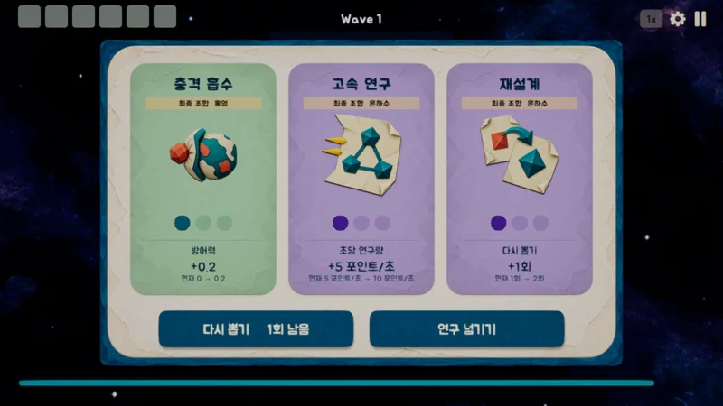

첫 미사일을 쏠 때 화면이 끊김
발견과 비교첫 발사 순간 화면이 끊기는 걸 발견했습니다. 같은 씬과 무기에서 워밍업 유무만 바꾸고 발사 함수 시간과 직후 화면 갱신 간격을 따로 비교하도록 요청했습니다.
판단과 적용발사 함수는 빨라졌지만 화면 갱신 간격 범위는 겹쳤습니다. 이어서 미사일과 소행성 풀링을 요청했습니다. Codex의 구현과 Unity Editor 비교에서 준비된 오브젝트를 가져오는 호출 비용이 줄었습니다.
게임 소개
플레이어는 중앙 행성에 접근하는 소행성 중 어느 방향부터 요격할지 판단합니다. 소행성을 파괴해 연구 포인트를 모으면 강화 카드를 고를 수 있습니다. 방어력을 높여 행성을 지키거나, 미사일을 강화해 밀려오는 소행성을 처리할 수 있습니다.
전투에서 얻은 연구 포인트가 다음 공격을 바꾸도록, 보상과 증강을 미사일 전투에 연결했습니다.

소행성을 파괴해 연구 포인트를 채우면 강화 카드가 열립니다. 선택한 카드에 따라 능력치가 바뀌거나 새 효과가 활성화되고, 조합 조건을 충족하면 최종 강화가 열립니다.

미사일이 소행성에 맞으면 직격 피해를 줍니다. 선택한 강화에 따라 폭발이 즉시 일어나거나, 명중 지점에 피해 영역이 남아 뒤따라오는 소행성에도 피해를 줍니다.
진행 단계에 따라 소행성 종류와 생성 강도를 갱신합니다. 유형별 등장 가중치와 생성 비용을 두고, 웨이브 동안 쌓인 예산으로 소행성을 생성합니다.
발견과 비교첫 발사 순간 화면이 끊기는 걸 발견했습니다. 같은 씬과 무기에서 워밍업 유무만 바꾸고 발사 함수 시간과 직후 화면 갱신 간격을 따로 비교하도록 요청했습니다.
판단과 적용발사 함수는 빨라졌지만 화면 갱신 간격 범위는 겹쳤습니다. 이어서 미사일과 소행성 풀링을 요청했습니다. Codex의 구현과 Unity Editor 비교에서 준비된 오브젝트를 가져오는 호출 비용이 줄었습니다.
발견과 원인소행성이 뜸해지는 장면이 일반 웨이브 도중에 발생한다고 짚었습니다. 비용이 큰 소행성이 다음 후보로 뽑히면 예산이 찰 때까지 나머지 생성도 기다리는 구조였습니다.
수정과 검증전체 예산에서 비용이 큰 소행성 몫을 따로 쌓고, 생성 가능한 소행성은 계속 나오게 하는 방안에 동의했습니다. Codex가 생성 로직을 바꾸고 10분 분량의 생성 시뮬레이션과 Unity 컴파일로 확인했습니다.
대표작 상세